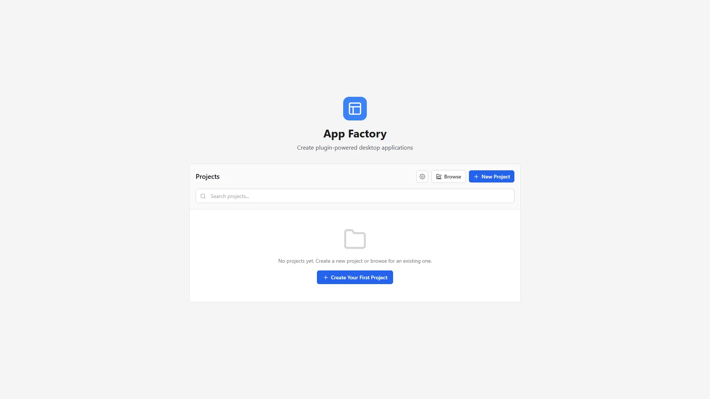
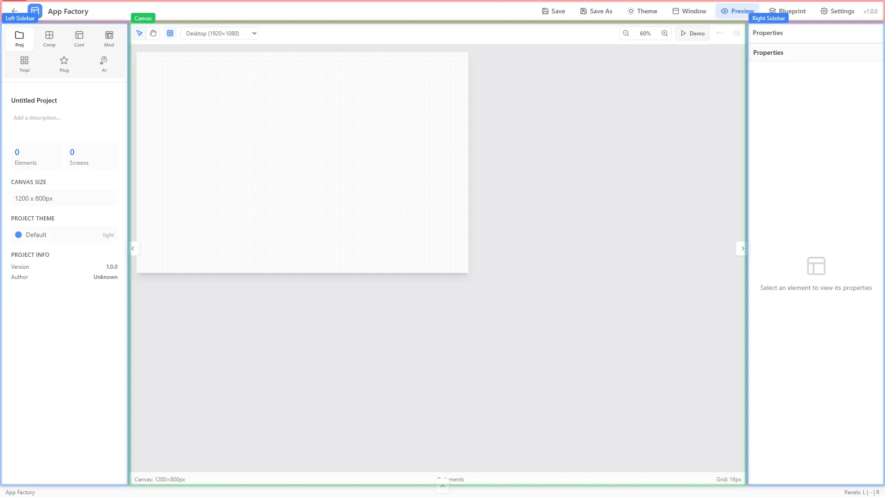
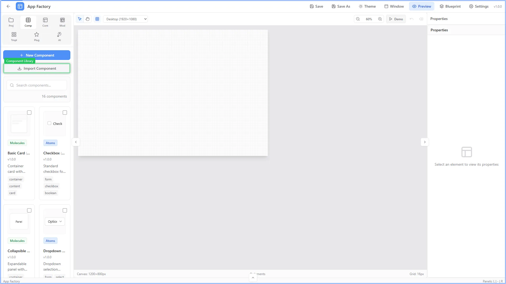
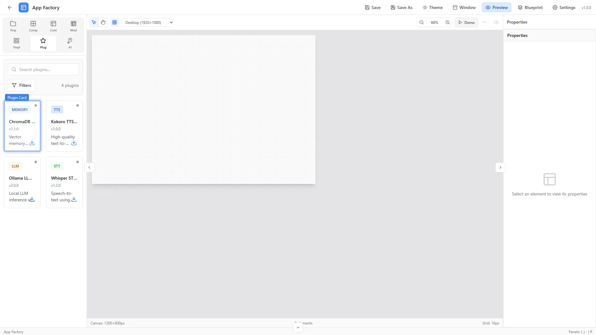
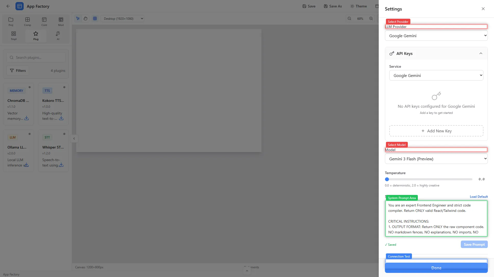

Introduction
This document serves as a visual dictionary for the App Factory UI. Use the names listed here to precisely reference UI elements in your prompts.
1. Launcher
The entry point of the application.

| Visual Marker | Name | Description |
|---|---|---|
| Blue Border | New Project Button | Initiates the project creation workflow. |
| Green Border | Recent Projects List | List of previously opened projects for quick access. |
2. Editor Layout
The main workspace for building applications.

| Visual Marker | Name | Description |
|---|---|---|
| Red Border | Top Bar / Header | Contains project meta-info, global actions, and status indicators. Code Ref:
[data-ui-ref="layout-header"]
|
| Blue Border | Left Sidebar | Navigation for Components, Plugins, Trees. Code Ref:
[data-ui-ref="layout-sidebar-left"]
|
| Green Border | Center Canvas | The interactive preview/editing area. Code Ref:
[data-ui-ref="layout-center-canvas"]
|
| Blue Border (Right) | Right Sidebar | Property Inspector and configuration. Code Ref:
[data-ui-ref="layout-sidebar-right"]
|
| Green Border (Bottom) | Bottom Panel | Console, Logs, or Preview output. Code Ref: [data-ui-ref="layout-panel-bottom"]
|
3. Panels & Sidebars
Detailed view of specific functional panels.
3.1 Components Panel
Highlights: Blue New Component Button (AI Generator), Green Component Library Grid.

3.2 Plugins Panel
Highlights: Orange Filters Toolbar, Blue Plugin Card.

3.3 Properties Panel (Right Sidebar)
Context-aware configuration for the currently selected element.

4. Modals & Overlays
4.1 Settings Modal
Global application configuration and AI provider settings.
| Visual Marker | Section | Description |
|---|---|---|
| Red | LLM Provider / Model | Select the AI backend (Ollama, OpenAI, Gemini) and specific model version. |
| Green | System Prompt | Editable text area for defining the AI's persona and coding rules. |
| Blue | Test Connection | Button to verify connectivity with the selected LLM provider. |
